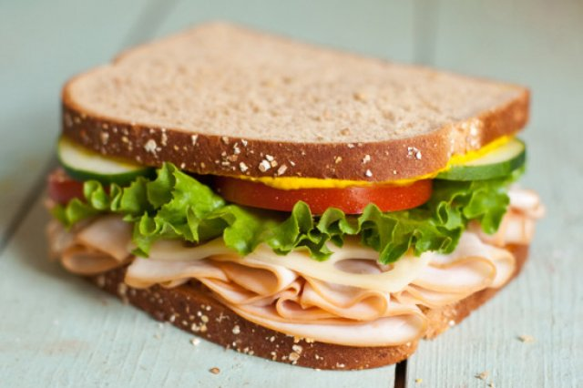
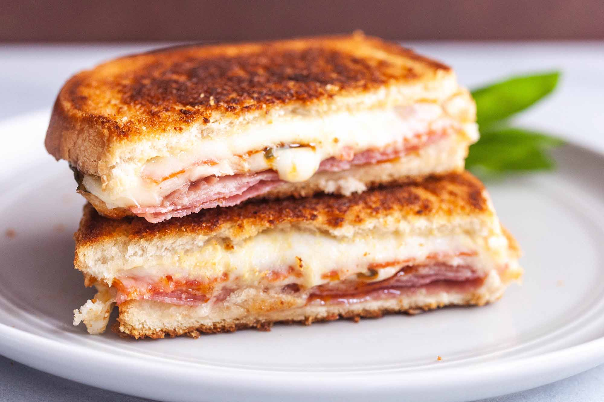

The Sandwich Debate
Debate: Should sandwiches be cut into rectangles or triangles?

Argument: Sandwiches Should be in RECTANGLES
Sandwiches should most definitely be cut into rectangles. It just makes the most sense. A straight line down the middle is how a sandwich was meant to be cut. The 90 degree angles created by said straight line is satisfying and creates a nice crisp, clean cut sandwich that makes you want to eat it even more.
Having that block shape just works better, and it keeps all the insides of the sandwich even and neat. Triangles have too many sharp angles, while rectangles have those solid 90 degree angles sandwiches should have.

Argument: Sandwiches Should be in TRIANGLES
Sandwiches should truly be cut in triangles. Having your sandwich in triangles is so much more pleasing visually and looks so much nicer than a big square block of bread. It lets the toppings fall the right way, it's an easy shape to hold, and it's angles are not boring old 90 degree angles like that block sandwich.
Triangles generally are just so much better than rectangles, and so sandwiches should be eaten in this great shape. GO TRIANGLES!

References
Pictures taken from these websites:
- https://us.kiwilimon.com/recipe/easy-snack-recipes/sandwiches/healthy-sandwich-and-fitness
- https://www.simplyrecipes.com/recipes/italian_grilled_cheese_sandwiches/
- https://www.indianhealthyrecipes.com/veg-club-sandwich-recipe/